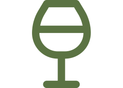

The days before the wedding we will stay in Montereale.
If you want to join us earlier we will organise an aperitivo on Friday.
To get there you can take a plane to either Milano Malpensa, Torino Caselle, or Genova.
The drive from the airport is around one hour and a half.
Look here for a list of B&B near Montereale.
Some suggestions nearby the wedding location
Agriturismo
This Bed & Breakfast is 16 minutes away from the location, perfect if you want to sleep somewhere comfortable and closeby.
OpenCountry House
I Turri is 25 minutes away from the wedding location and is located between Acqui Terme and the cascina where we will celebrate.
Open
Red wine and Italian food.
What else do you want?
 Barbera, Barolo, Barbaresco, Nebbiolo.
Battuta di Fassone, Torta verde, Focaccia, Farinata.